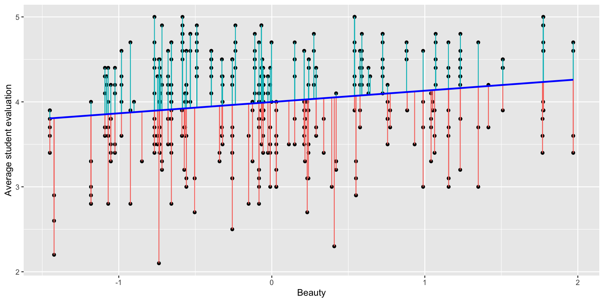

[1] 0.1890391Data Science for Business Applications
Class 01 - Linear Regression
Introduction
Course Goals
- Use regression to build predictive models
- Understand the benefits and limitations of the models we build
- Given a new business situation, select an appropriate model, build it, measure its effectiveness, and effectively communicate the results
- This is a practical course!
Why Does This Course Exist?
- Why bother learning this stuff when we can get ChatGPT to do data analysis for us?
- AI (and computing in general) is only useful when you have the expertise to be able to recognize the correctness (or not) of its output
- In this class, you’ll develop that expertise!
About the Course Staff
- Instructor: Henrique Bolfarine, Ph.D.
- Office hours: Mondays 1:00 PM - 2:00 PM (GSB 3.140 A)
- Email: henrique.bolfarine@austin.utexas.edu
- Course Assistants:
- Lead Course Assistant (CA): Ezgi Durakoglugil
- Office hours: Many TA/CA office hours every week (both in person and on Zoom) - This should be your first option!
- You can ask any of the TAs/CAs about course content, but go to Ezgi for questions about logistics
Course logistics
Course Structure
- Units
- Unit A: Fundamentals of regression modeling
- Unit B: Applications and extensions
- Canvas
- Make sure you can log in and are enrolled in STA 235 in Canvas
- Check out the home page for the weekly schedule and to meet the course staff
Statistical Computing
- We will use R and RStudio for statistical analysis throughout the course
- Make sure both are installed on your laptop and bring it to every class
- If you aren’t comfortable with R/RStudio from STA 301, don’t worry!

Weekly Cadence for a Particular Topic
- Due by the start of class on Monday/Tuesday: Perusall pre-class video/reading discussion covering the topic
- During class on Monday/Tuesday: Lecture, activities, practice topic
- Due by 11:59 PM the following Sunday/Monday: Homework covering the topic
- The following Monday/Tuesday: at the beginning of class: Checkpoint Quiz on that topic
Pre-Class Work
- This is a fast-paced course, so it’s essential that you think about the material before class.
- We will use Perusall for pre-class video and reading assignments.
- Use Perusall to ask your classmates questions, and share your knowledge, thoughts, and opinions.
- This helps you better understand the material and will help me gear class time to what topics you are having the most trouble with.
Pre-Class Work
- Pre-class assignments (typically videos) are due at the start of each class.
- Aim to chime in with at least a few thoughtful questions, responses, or comments for each reading assignment.
- Grading is based on effort and thoughtfulness of your questions and comments and your engagement with classmates and the text.
- Each assignment is scored 0-3, but with a reasonable effort you will get a 3 on each one (so don’t worry about your grade).
Homework
- Why homework?
- Homework is due each week at 11:59 PM the night before class and submitted through Canvas.
- Automatically graded; resubmit as many times as you want!
- OK to work together, but try the problems on your own first for maximum benefit.
Checkpoint Quizzes
- It is critical in this course to stay on top of things and not fall behind.
- Checkpoint Quiz at the start of each class will help you ensure that you are really learning the material and give you an early heads-up if you aren’t.
- We’ll drop your lowest quiz score from each unit (A and B).
- You’ll have access to RStudio and a “cheat sheet” during quizzes (don’t spend time memorizing anything!).
Mastery Exams
- Each unit concludes with a Mastery Exam:
- Unit A: October 9 or 10 at 7 PM
- Unit B: University-assigned final exam period
- You’ll have access to RStudio and a “cheat sheet” during exams (don’t spend time memorizing anything!).
Assessment Grading
- Unit A has 7 Checkpoint Quizzes and Unit B has 6.
- For each unit, we will replace your lowest quiz score with your exam score for that unit (if that helps your overall grade).
Grading
| Component | Points |
|---|---|
| Pre-class work (Perusall) | 44 |
| Class Participation | 56 |
| Homework (13) | 195 |
| Checkpoint Quizze (13) | 325 |
| Exam A | 190 |
| Exam B | 190 |
| Total | 1,000 |
Getting Help
- My office hours: Schedule on Canvas.
- TA/CA office hours: Schedule on Canvas.
- Post questions in videos in Perusall (for questions about the course material).
- Post questions in group chats in Perusall (for general questions about the course, or homework questions).
- Weekly optional TA/CA-led review session (TBD).
Simple Regression
- What personal characteristics about an instructor do you think are predictive of the scores they receive on student evaluations?

Hamermesh & Parker (2005) Data Set
- Student evaluations of \(N=463\) instructors at UT Austin, 2000-2002
- For each instructor:
eval: average student evaluation of teacherbeauty: average beauty score from a six-student panelgender: male or femalecredits: single- or multi-credit courseage: age of instructor- (and more…)
Explore the data: eval
Explore the data: beauty

Explore the data
Correlation
The correlation \(r\) between two variables \(X\) and \(Y\) measures the strength of the linear relationship between them. Correlation ranges from \(-1\) (perfect negative relationship) to \(0\) (no relationship) to \(1\) (perfect positive relationship).
Correlation

Correlation
- How can we interpret this?
- The
$sign accesses the variables in the data setprofs.csv.
Let’s Build a Simple Regression Model
\[ \text{eval} = \beta_0 + \beta_1 \cdot \text{beauty} + \epsilon \]
- \(\beta_0\) and \(\beta_1\) are known as coefficients (standard notations)
- \(\beta_0\) is the intercept
- \(\beta_1\) is the slope associated with
beauty - The term \(\epsilon\) (epsilon) accounts for unobserved factors that are not included in this model
Let’s Build a Simple Regression Model in Rstudio
Call:
lm(formula = eval ~ beauty, data = profs)
Residuals:
Min 1Q Median 3Q Max
-1.80015 -0.36304 0.07254 0.40207 1.10373
Coefficients:
Estimate Std. Error t value Pr(>|t|)
(Intercept) 3.99827 0.02535 157.727 < 0.0000000000000002 ***
beauty 0.13300 0.03218 4.133 0.0000425 ***
---
Signif. codes: 0 '***' 0.001 '**' 0.01 '*' 0.05 '.' 0.1 ' ' 1
Residual standard error: 0.5455 on 461 degrees of freedom
Multiple R-squared: 0.03574, Adjusted R-squared: 0.03364
F-statistic: 17.08 on 1 and 461 DF, p-value: 0.00004247Interpreting the Model
evalis the response variable (\(Y\));beautyis the predictor variable (\(X\)).Simple regression uses the best fit line to give us a linear equation to predict \(Y\) from \(X\):
\[ \widehat{\text{eval}} = 3.998 + 0.133 \cdot \text{beauty} \]
We can predict the evaluation score for someone based on their beauty score just by plugging into the equation.
What do the coefficients mean?
Interpretation
- Intercept
- When the beauty score is zero, the expected evaluation is
3.99(almost 4).
- Here,
beauty = 0represents an “average beauty”. - Important, the intercept is evaluated always when the predictor variable is zero.
- When the beauty score is zero, the expected evaluation is
- Slope for Beauty
- For every one-unit increase in the beauty score, there is a
0.133increase in the professor’s expected evaluation.
- In this context, “expected” refers to the average evaluation.
- For every one-unit increase in the beauty score, there is a
Statistical Significance of the Model
- The population regression line (the best fit line in the population) is \(Y = \beta_0 + \beta_1 X\) (we can’t know this).
- Our regression equation is the best fit line in the sample, or \(\hat{Y} = \hat{\beta}_0 + \hat{\beta}_1 X\) (this is what we get from our sample data).
- The sample intercept and slope \(\hat{\beta}_0\) and \(\hat{\beta}_1\) are our best estimates for the population intercept and slope \(\beta_0\) and \(\beta_1\).
- But we need to get a sense of how close \(\hat{\beta}_0\) and \(\hat{\beta}_1\) are to \(\beta_0\) and \(\beta_1\)!
P-values
- For this model, the p-values associated with the coefficients, slope and intercept are close to zero:
| Term | p-value - Pr(>|t|) |
Significance |
|---|---|---|
| Intercept | 0.0000000000000002 | *** |
| Beauty | 0.0000425 | *** |
- In this case, there’s evidence that beauty has an impact on a professor’s evaluation at a populational level.
- Thus, we can conclude that the effect of beauty is statistically significant in relation to the professor’s evaluation.
Rule of Thumb for P-values
- If the p-value is smaller than 0.05, we can conclude that the effect is statistically significant.
- Otherwise, if the p-value is greater than 0.05, we conclude that the effect from the predictor is not statistically significant.
Confidence Intervals
Let’s get confidence intervals for the slope and intercept to get a sense of the uncertainty in our estimates:
- Slope: We are 95% confident that the incremental impact of each additional beauty point is between \(0.07\) and \(0.20\) student evaluation points.
- Intercept: We are 95% confident that the average student evaluation score for average-looking professors (
beauty= 0) is between \(3.95\) and \(4.05\). - Rule of thumb: If zero is inside the CI, the effect is not statistically significant.
- P-values and confidence intervals (CIs) are connected. If the p-value is greater than 0.05, it is likely that zero will be included within the confidence interval.
Confidence intervals for predictions
Interval for a single prediction:
- We are 95% confident that a single professor with a beauty score of 1 will get rated between 3.06 and 5.21.
Interval for an average prediction:
- We are 95% confident that the average rating of all professors with beauty scores of 1 will be between 4.05 and 4.21.
Residuals and R-squared
- Each instructor has a residual: the difference between their actual and predicted scores (the prediction error).

Residual standard error
- The residual standard error is in the same units as the response variable:
- In this case the RSE is:
Residual standard error: 0.5455 - All predictions made by this model will, on average, differ from the true values by approximately 0.5455, which represents one standard deviation of the residuals.
- In this case the RSE is:
- We can even get the 95% prediction interval for a single (beauty = 1) prediction as
- lower bound: \(3.998 + 0.133 \cdot 1 - 2\times \text{RSE}\)
- upper bound: \(3.998 + 0.133 \cdot 1 + 2\times \text{RSE}\)
R-squared (\(R^2\))
- The \(R^2\) provides an understanding of the “fit” of the model in relation to the data.
- If the \(R^2\) is close to one, the model has a good fit.
- If the \(R^2\) is close to zero, the model does not provide a good fit for the data.
Multiple R-squared: 0.03574- This indicates not a great fit.
- Important interpretation:
- The \(R^2\) represents the percentage of variation in the response variable that can be explained by the predictor.
- For this model, 3.6% of the variation in evaluation scores can be explained by the beauty variable alone, while the remaining 96.4% is attributed to other unobserved factors.
Multiple Regression
Adding more predictors
- Is the professor’s evaluation explained only by it’s beauty or there might be other factor affecting their evalution?
- Let’s check if the variable
agemight help us better explain the relationship between beauty and evaluation. - We update our model as:
\[
\widehat{\text{eval}} = \beta_0 + \beta_1 \cdot \text{beauty} + \beta_2 \cdot \text{age} + \epsilon
\] - We now have a multiple regression model. - Both beauty and age are numerical variables. - The term \(\epsilon\) (epsilon) accounts for unobserved factors that are not included in this model.
Multiple regression model
Call:
lm(formula = eval ~ beauty + age, data = profs)
Residuals:
Min 1Q Median 3Q Max
-1.80242 -0.36514 0.07407 0.39913 1.10206
Coefficients:
Estimate Std. Error t value Pr(>|t|)
(Intercept) 3.9844013 0.1337296 29.794 < 0.0000000000000002 ***
beauty 0.1340634 0.0337441 3.973 0.0000824 ***
age 0.0002868 0.0027148 0.106 0.916
---
Signif. codes: 0 '***' 0.001 '**' 0.01 '*' 0.05 '.' 0.1 ' ' 1
Residual standard error: 0.546 on 460 degrees of freedom
Multiple R-squared: 0.03576, Adjusted R-squared: 0.03157
F-statistic: 8.53 on 2 and 460 DF, p-value: 0.0002305- How can we interpret this model?
Interpretation of Model Coefficients
- Intercept
- When both the beauty score and age are zero, the expected evaluation is
3.98(almost 4).
- Here,
beauty = 0represents an “average beauty,” andage = 0is not meaningful in this context but is part of the model.
- Important: The intercept is evaluated when all predictor variables (beauty and age) are zero.
- When both the beauty score and age are zero, the expected evaluation is
- Slope for Beauty
- For every one-unit increase in the beauty score, there is a
0.134increase in the professor’s expected evaluation, holding age constant.
- For every one-unit increase in the beauty score, there is a
- Slope for Age
- For every one-unit increase in age, there is a
0.0003increase in the professor’s expected evaluation, holding beauty constant.
- For every one-unit increase in age, there is a
Statistical significance
- For this model, the p-values associated with the coefficients (intercept, beauty, and age) are as follows:
| Term | p-value - Pr(>|t|) |
Significance |
|---|---|---|
| Intercept | < 0.0000000000000002 | *** |
| Beauty | 0.0000824 | *** |
| Age | 0.916 |
- In this model, there is strong evidence that
beautyhas an impact on a professor’s evaluation at the population level, as its p-value is very close to zero. - However, the p-value for
age(0.916> 0.05) indicates that there is no statistically significant relationship between age and a professor’s evaluation. - Thus, we can conclude that the effect of
beautyis statistically significant in relation to a professor’s evaluation, while the effect ofageis not statistically significant.
RSE and \(R^2\)
- There are no significant changes in relation to the RSE and \(R^2\) in relation to the previous model.
- This means that the quality of the fit and the accuracy of the predictions will be nearly identical to those of the previous model.
- For this model, 3.6% of the variation in evaluation scores can be explained by the beauty and age variables alone, while the remaining 96.4% is attributed to other unobserved factors.
- What about predictions and confidence intervals?
What’s the Impact of Gender on Student Evaluations?
- Do you see a difference between men (blue) and women (red)?

For for the Weekend
- Read the syllabus.
- Do the first homework assignment in Canvas (covering today’s material).
- Do the first pre-class assignment in Perusall (to prepare for next week’s class).